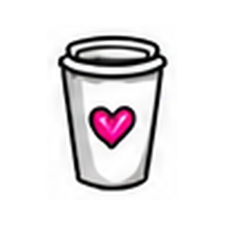
Реальная среда
Кофейни, встречи, перекус, работа и обычный ритм жизни — не лаборатория, а настоящие ситуации.

Кофейни, встречи, перекус, работа и обычный ритм жизни — не лаборатория, а настоящие ситуации.
Контролируем температуру, время и состав. Готовим продукт так, как нужно для исследования.
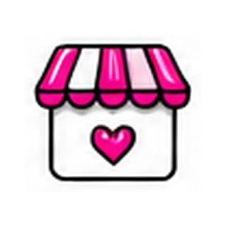
50–150 посетителей в день на каждой точке. Разные локации и аудитории.
Опросы, дегустации, фокус-группы, дневники, глубинные интервью.
При серии исследований снижается стоимость следующего этапа.
Подбираем аудиторию под продукт и бизнес-вопрос, а не наоборот.
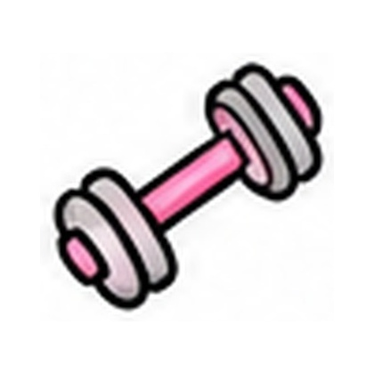
Состав, польза, калорийность, функциональность и баланс вкуса.
Регулярные тренировки и высокие требования к функциональности продукта.
Влияют на выбор и частоту покупки. Важно услышать именно их мотивацию.
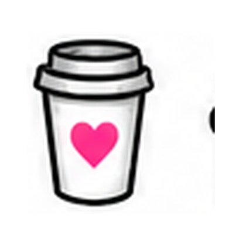
Выбирают для себя и семьи, оценивая пользу, рациональность, вкус и эмоции.
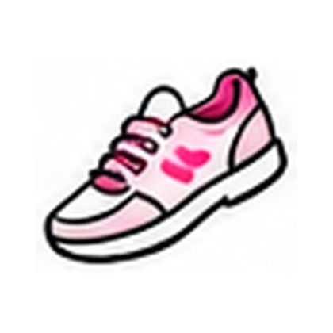
Быстро реагирует на новинки, внешний вид, коммуникацию и новые форматы.
Люди в тренде, постоянно работающие и часто в стрессе. Часто по-другому смотрят на продукт.
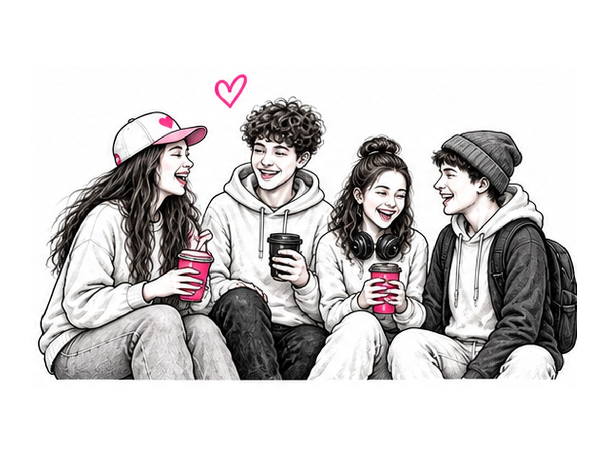
Что цепляет первым, что вызывает сомнение, что человек замечает на упаковке, как объясняет вкус и почему готов — или не готов — купить снова.
Особенно — продукты питания: снеки, кондитерские изделия, напитки, молочные продукты, мясная гастрономия и другие категории.
Смотрим на продукт глазами потребителя, технолога и маркетолога. Поэтому оцениваем не только вкус, но и упаковку, дизайн, claims, позиционирование и продвижение.
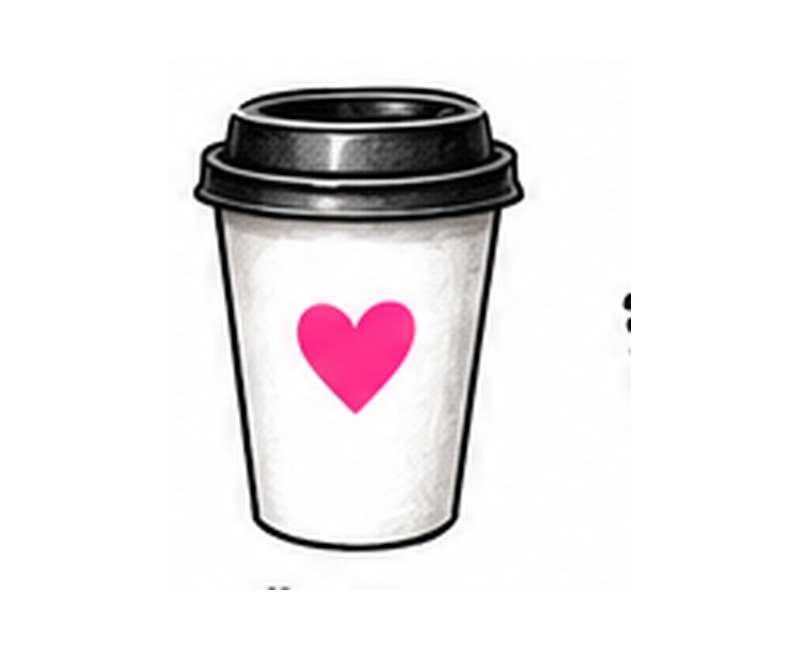
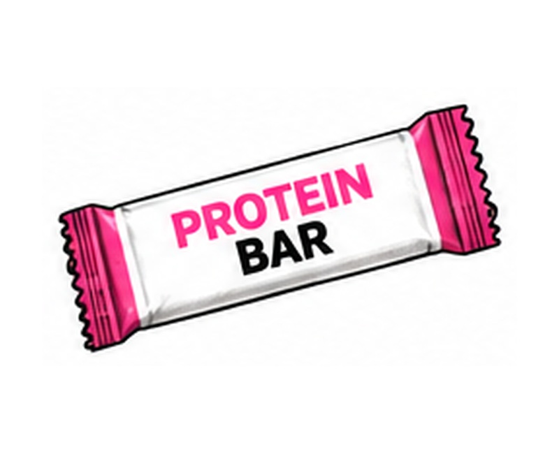
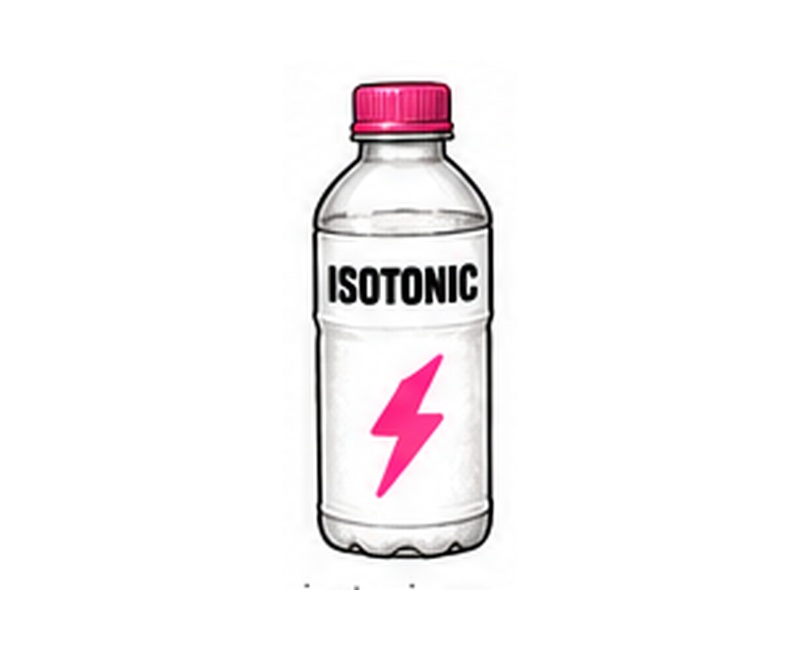
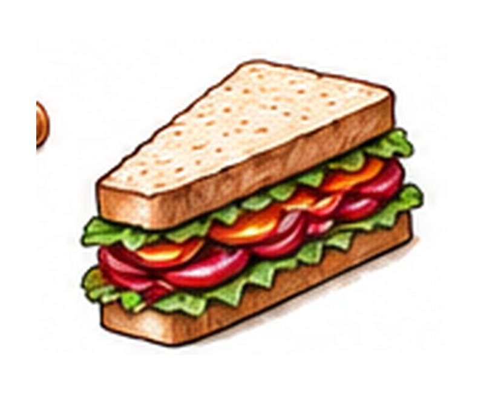
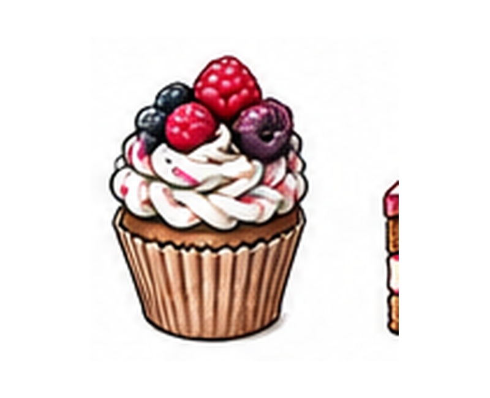
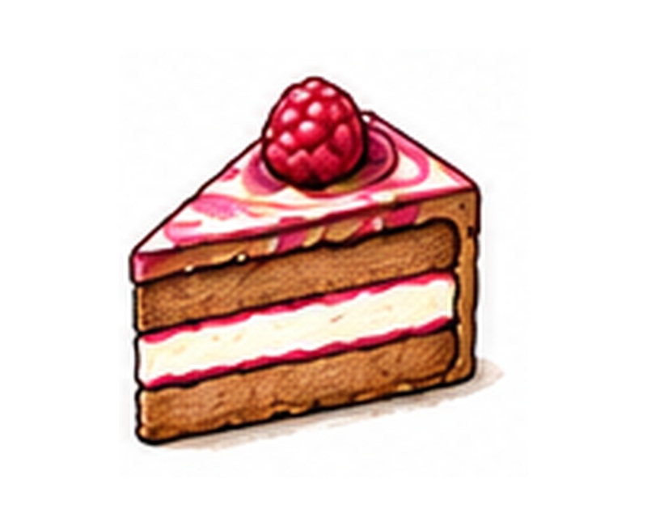
вкус • аромат • текстура • хруст • сладость • послевкусие • удобство потребления
первичный выбор • заметность • понятность • привлекательность • A/B • доверие
позиционирование • claims • коммуникация • мотиваторы выбора • продвижение
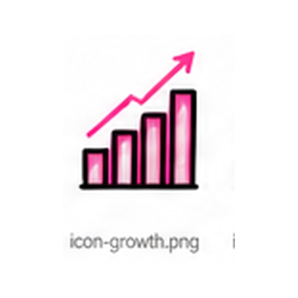
01Для измеримого сравнения образцов, концепций или сегментов на реальной аудитории.
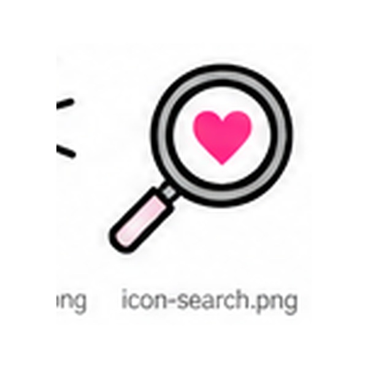
02Когда важно понять «почему». Мотивы, язык потребителя, барьеры, реакции на идею, упаковку и коммуникацию.
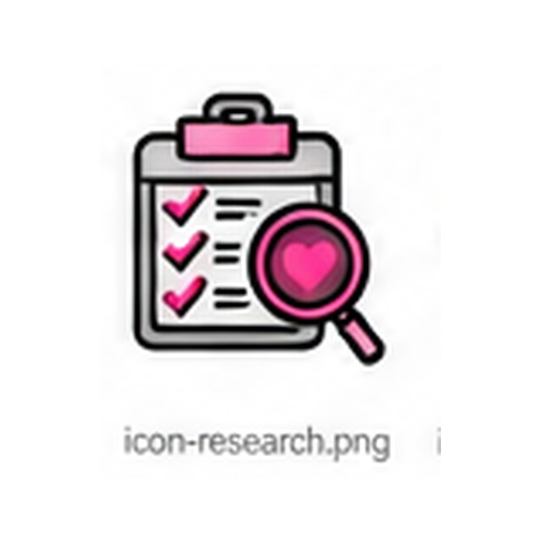
03Для выбора рецептуры, сравнения с конкурентом и оценки сенсорных характеристик.
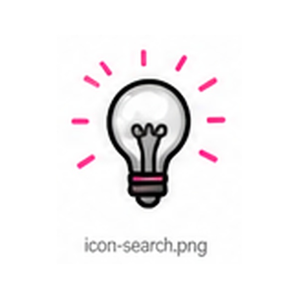
04Первичный выбор, заметность, доверие, понятность и соответствие ожиданиям.
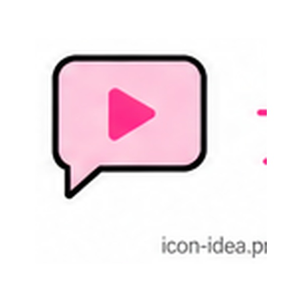
05Команда клиента сама слышит интонации, аргументы, сомнения и реальные эмоции.
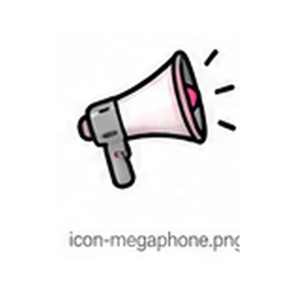
06Для задач, где важны история выбора, сценарий потребления и персональные мотивы.
Бизнес-вопрос, ЦА и KPI.
Сценарий, анкета и критерии.
Выбираем кофейню из базы.
Опросы, A/B, дегустации.
Данные, мотивы, инсайты.
Живые ответы по запросу.
Рекомендации и ТЗ.
Понимаем, что именно движет выбором.
Формируем конкретные изменения продукта или дизайна.
Помогаем внедрить выводы в продукт, упаковку и продвижение.
Проверяем новую версию и подтверждаем изменения.

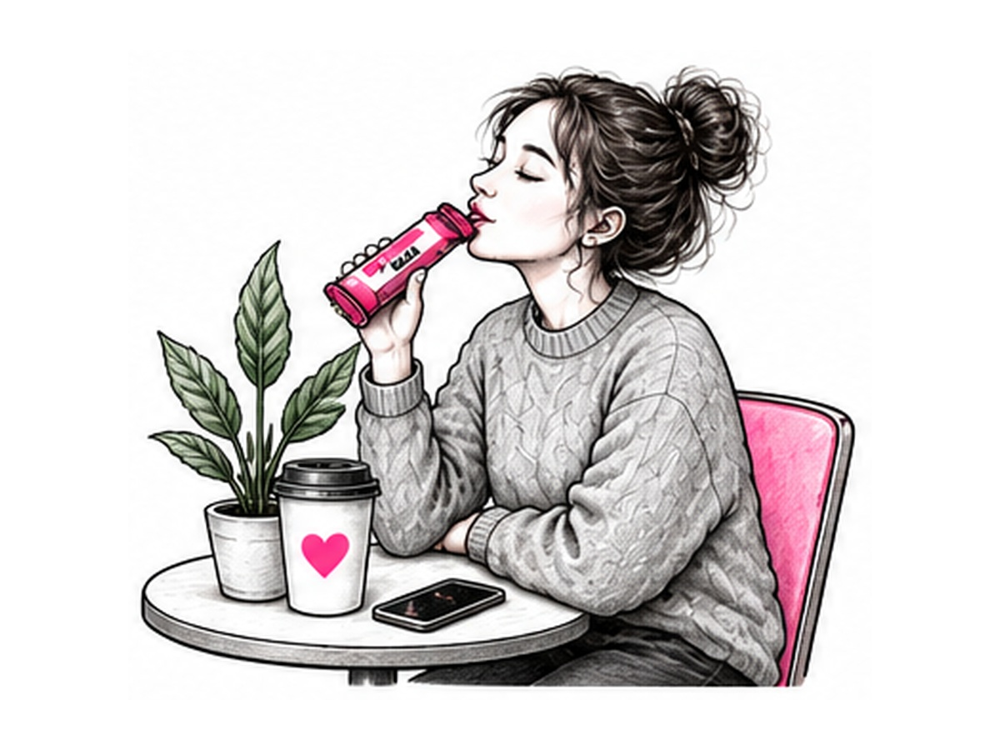
Кофейни дают быстрый доступ к реальным потребителям в естественной ситуации выбора.
Для конкретной продуктовой задачи и быстрого решения.
от 190 000 ₽Несколько тестов в течение 3–6 месяцев для разработки или перезапуска линейки.
от 3 исследований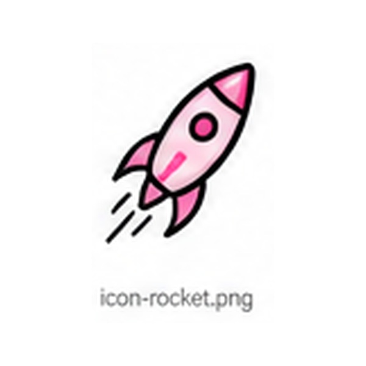
Регулярная программа на 3, 6 или 12 месяцев. Быстрее запуск и ниже стоимость каждого теста.
индивидуальные условияМожно начать с одного теста и затем перейти к регулярной программе.
rnd@lanny.group +7 (926) 372-86-63